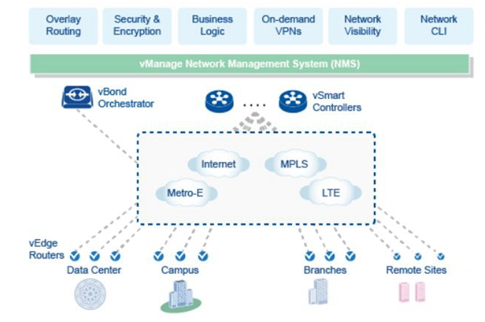
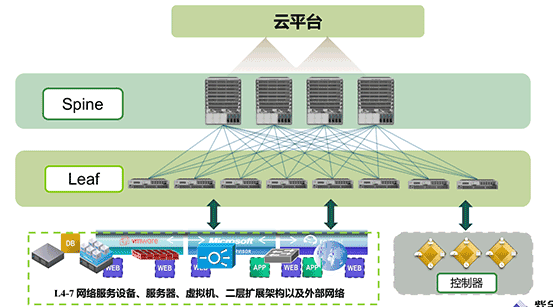

SD-WAN
SD-WAN，即软件定义广域网，是将SDN技术应用到广域网场景中所形成的一种服务，这种服务用于连接广阔地理范围的企业网络、数据中心、互联网应用及云服务。
这种服务的典型特征是将网络控制能力通过软件方式‘云化’，支持应用可感知的网络能力开放。
SD-WAN的优势
简化您的分支机构网络
利用自动化零接触式部署、简便配置和集中式故障排除工具，可以提高分支机构调配速度。您可在分支机构边缘、云端或数据中心内插入网络服务。
优化应用性能
支持以安全方式直接访问企业级应用和云计算应用，从而优化应用在混合网络或 Internet 链路中的性能。SD-WAN 跨多种 WAN 链路和服务提供商提供整合监控功能和可见性。
提高分支机构的敏捷性
支持多种链路、设备和服务与现有解决方案共存并进行互操作。支持通过 API 集成到各种管理和报告系统中。
降低成本
轻松构建混合 WAN，并使分支机构可以使用普通宽带构建企业级 WAN。提供多种部署选项（例如商用虚拟机设备、基于 x86 的现有路由器上的虚拟机或 SD-WAN Edge 设备），从而降低硬件交付成本。
消除不稳定
SD-WAN将多种类型广域网链路虚拟化，能够消除某一条链路出现故障后带来的网络不稳定问题；
集中配置
SD-WAN可以实现对分支机构设备集中管理和控制，设备配置文件可以由控制器统一推送至设备；
零接触配置
在SD-WAN网络中分支机构设备接入网络后可以自动进行配置，管理、沟通成本以及对分支机构人员专业技能要求大幅降低；
简化运营
SD-WAN具有强大的集中管理系统，可以掩盖实际物理环境复杂性，因此管理更为简便，降低运营成本。

SDN解决方案
随着云计算技术发展，金融银行业数据中心中的云计算部署规模不断扩大，应用迭代速度也不断提升，业务规模随时需要快速扩展或缩减。网络系统作为数据中心IT基础架构的关键部分，需要适应云计算数据中心业务部署的发展需求。传统网络架构中，网络资源和应用系统高度耦合，资源调配需要手工管理，效率低下，无法适应云计算数据中心的需求。
滴雨公司提供的数据中心SDN解决方案基于OverLay网络虚拟化技术，使物理设备和逻辑服务解耦，网络资源能够在不同业务之间动态快速调配，提升了资源调配灵活性和利用效率，同时也杜绝了传统大型局域网常见的二层环路故障；SDN方案实现了控制与转发的分离，支持软件定义的业务分区，为逻辑网络架构规划和设计提供了新模式；此外，SDN方案还提供自动化的网络运维能力，通过网络服务自动编排可以实现应用的自动化快速部署，简化运维工作，提升数据中心的管理与维护能力。

SD-WAN四大特点
- 1>支持多种网络连接方式混合接入
多种网络方式，比如MPLS, Internet, LTE等。 - 2> 支持动态调整路径
对多种网络连接进行负载均衡。 - 3> 管理和业务启动简单高效
高效支持远程控制，零配置业务自动启动。 - 4> 支持VPN及其他增值业务服务
支持如WOC(网络优化控制)，防火墙等。
SD-WAN技术亮点
- 1>性能
动态路径选择；智能QoS；链路瞬间转向；应用性能监控。 - 2>虚拟服务平台
虚拟网络功能；安全服务链；多平台支持。 - 3>云网络
免物理接触部署；云VPN(IPSec)；集成防火墙。 - 4>自动化控制台
集中式管理；应用智能选路；应用可视化。。